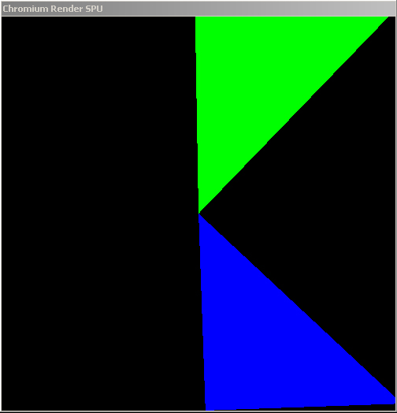

|
 |
| Each triangle is submitted by a separate client in a cluster-parallel program. |
The Chromium server can serialize multiple incoming streams from a
distributed OpenGL application. Here we will build a trivial parallel
application using Chromium. The application that we will be considering is
called psubmit, and can be found in the directory cr/progs/psumit.
Writing a parallel OpenGL application is pretty simple. You have a bunch of processes, each one of which is responsible for a portion of the model to be rendered. Each process renders its portion pretty much as if it were the only process in the world. The differences come up when you have requirements about the ordering of command execution.
OpenGL provides ordered semantics. That means that if function A is called after function B, the resulting image should look as if A happened before B. With parallel programs, it's no longer clear which function is getting called first. Therefore, if you aren't using the depth test (for example), and you draw two overlapping triangles in parallel, you don't know which one will appear on top. To get around this problem, Chromium implements the parallel API proposed by Igehy, Stoll and Hanrahan in SIGGRAPH '98. This API extends OpenGL to have barriers and semaphores, which are sufficient to express almost all ordering constraints that come up in graphics.
Let's take a look at the main function of psubmit.c
in cr/progs/psubmit. The first thing this function does is
determines how many of its peers exist, and which instance number (starting from
0) this particular main is running in. In psubmit,
this is done with command line arguments, although more complex programs will
probably need to do some sort of application-level communication or
synchronization and would get this information from, say, MPI.
Once the rank and size of the program are determined, the following two lines appear:
| crCreateContext(); crMakeCurrent(); |
These calls, declared in the header file "cr_applications.h",
provide a mechanism to initialize the Chromium system without creating a
window. This is particularly useful for parallel applications, since it
doesn't really make sense to have a bunch of blank faked-out windows popping up
all over the cluster. This also means that the client nodes in the cluster
do not have to have a graphical environment running just to house a blank
faked-out window.
The next thing that the application does is create a GL barrier:
| glBarrierCreate( MASTER_BARRIER, size ); |
Notice that every node in the cluster will create this barrier. This is
perfectly legal, as long as the "size" parameter matches up. MASTER_BARRIER
is just an integer that "names" this barrier, much like an OpenGL
display list or texture object (except that the namespace is shared between
clients by default).
Next comes the main drawing loop. This application follows the basic format of all simple parallel OpenGL applications:
| for (;;) { if (rank == 0) glClear(...); glBarrierExec( MASTER_BARRIER ); // Drawing code here glBarrierExec( MASTER_BARRIER ); if (rank == 0) crSwapBuffers(); } |
A few things to note about this drawing method:
glClear) in the future.glBarrierExec (also declared in cr_applications.h)
is the call to enter a barrier.